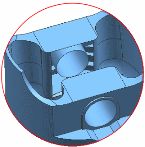

Suppress the unsewn sheet body
 Part Navigator
Part Navigator
|
|
 Reference Sets
Reference Sets-
 Sheet Body "Unsew (4)" (deselect)
Sheet Body "Unsew (4)" (deselect)

The software ignores the sheet body in all future operations.